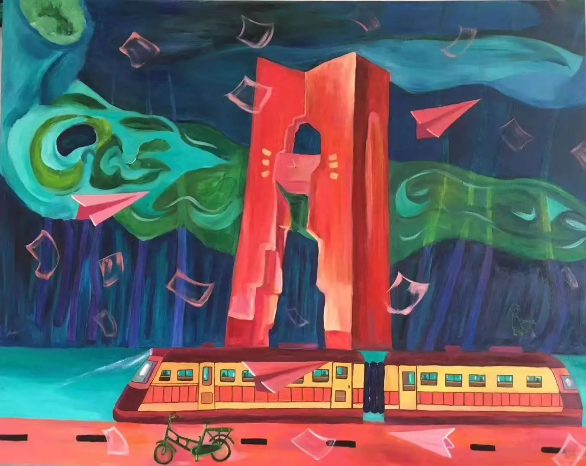

陈河田
色彩浓烈，构图饱满——以故事为画笔，以信仰为颜料，在现实与精神之间自由穿行
Latest Works
最新作品
色彩浓烈、构图饱满，每一幅作品都是一段精神的独白
2026.02
厦门沙坡尾展览空间
陈河田与朋友在厦门沙坡尾共同创立展览空间，为本地与外地年轻艺术家搭建交流平台
色彩浓烈，构图饱满——以故事为画笔，以信仰为颜料，在现实与精神之间自由穿行
色彩浓烈、构图饱满，每一幅作品都是一段精神的独白
陈河田与朋友在厦门沙坡尾共同创立展览空间，为本地与外地年轻艺术家搭建交流平台
像在画廊中漫步——每一件作品都有它的故事
图片是结果，视频是过程——让作品活起来

1990年10月出生于福建厦门（翔安区），现工作生活于厦门。2015年毕业于贵州师范大学油画专业，获本科学位。
大学期间深受苗族、布依族等少数民族文化的浓烈色彩与神秘图腾感染，这直接影响了他的毕业创作《魂》系列。毕业后经历职业迷茫期，曾担任代课老师、开办绘画培训班，但始终坚持创作。
2016年作品在上海首次售出，此后陆续参加国内外展览。2022年华为公司一次性购得其40余幅作品，总价超过100万元，成为其艺术生涯的关键转折点，从此成为全职画家。
2026年2月，与朋友在厦门沙坡尾共同创立展览空间，为本地与外地年轻艺术家搭建交流平台。
对于绘画，我是从心底热爱的，我不会平白无故地去画，一定要有故事才能去讲述，才能打动别人。—— 陈河田
《魂》系列是思想精髓的出窍，时间文化的记录。—— 艺术评论家 袁洪业
从学院到国际——一条艺术成长之路
网站最终目的是连接现实世界
欢迎各类合作洽谈
只要能够解决温饱，画画一辈子都不要放弃。—— 陈河田的老师
选择您偏好的语言浏览本网站。译文由 AI 自动生成，如有不尽之处敬请谅解。
💡 选择语言后，网站所有文字会自动切换为对应译文。如需切回中文，点击下方按钮即可。